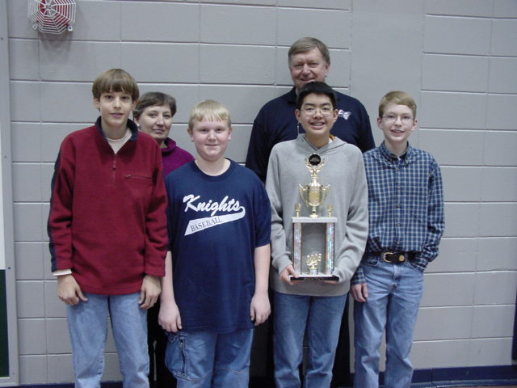
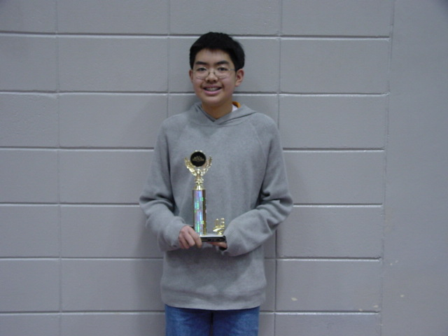
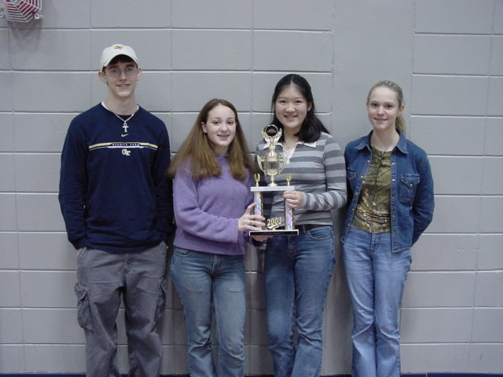
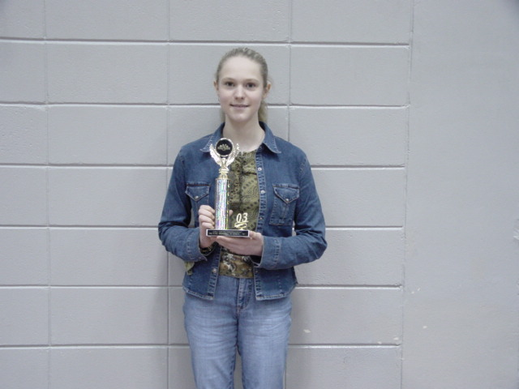

| GSU Top Twenty-Five Jordan Jones John Marshall Alex Yang Sung Min Kye Beth Pollack Betsy Aziz Morgan Doty Noah Posner Cam Randall Page Brunson Alisha Drummer |
GCTM State Tournament - 6th Place Alex Yang, Brian White, Andrew McLean, Alisha Drummer 12th in State - Alex Yang
|
||||
| GSU 2nd Place Team Alex Yang Jordan Jones John Marshall Andrew McLean |
 | ||||
| GSU Fourth Place Team Beth Pollak Betsy Aziz Page Brunson Alisha Drummer |
GSU Fifth Place Team Sung Min Kye Morgan Doty Cam Randall Brian White | ||||
|  |
|||||
| Statesboro High Junior Varsity | |||||
|  |  | ||||
|
Note that you can add once and then multiply once or you can multiply twice and then add once. Example 2 : 
Example 3 : Suppose a Bulloch county farming family wanted to triple their stock. They presently have 4 goats and 5 cows. How many will they have after tripling their stock? 3 ( 4G + 5C ) = 3(4G) + 3(5C) = (3.4)G + (3.5) = 12G + 15C |
|
|
|
|
| Girl, boy, nor machine can multiply 3 numbers
at the same time. Thus we need the associative law to tell us that it
doesn't matter which two we choose first. What other law may we need to
prove this?
|
|
 |
|
 |
Find the length of the rope needed to lasso the world.
Remember that Circumference = P * Diameter
Calculate the volume of the world. |
 |
If you went clear around the world, raising the rope 6 inches off the surface of the world, how much additional rope would you need? |